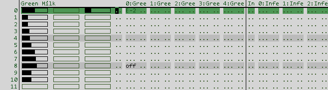
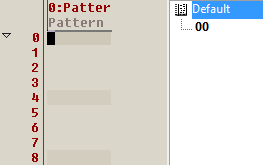
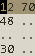
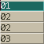
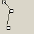
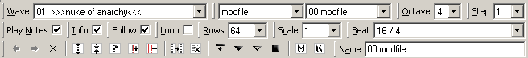
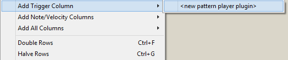
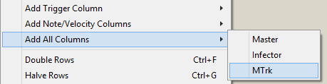
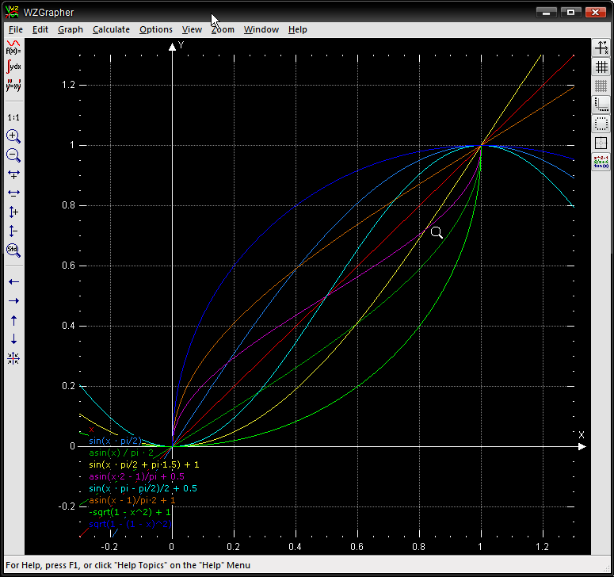

The pattern editor is basically a tool to edit numbers in a grid. The numbers are organized in distinct columns refering to plugin parameters, repeated by rows for each step of time. Columns can be rendered in different ways, depending on the type of parameter.

Part of a pattern with sliders, raw values and notes columns.
Trigger columns are accommodated by the right pane showing a list of all formats and patterns that can be triggered, including itself. This means a pattern could trigger itself - don't!

| Operation | Action |
|---|---|
| Arrows | Move cursor |
| Arrow up/down+Arrow left/right | Move cursor diagonally |
| Page Up | Move cursor up 16 rows |
| Page Down | Move cursor down 16 rows |
| TAB | Move cursor to next track |
| Shift+TAB | Move cursor to previous track |
| Home | Move to beginning of line |
| Ctrl+Home | Move to beginning of loop |
| End | Move to last column |
| Ctrl+End | Move to end of loop |
| (keyboard notes) | Edit notes |
| Shift+(keyboard notes) | Edit notes, chord mode |
| Ctrl+Scroll wheel | Change pattern display resolution |
| Shift+Scroll wheel | Change font size |
| Drag+Drop selection | Move selected pattern data |
| Drag+Ctrl+Drop selection | Copy selected pattern data |
| Drag selection+Right click | Stamp selected pattern data |
Pattern columns are usually rendered as value columns or trigger columns by default. Select different rendering modes via right click -> Column Editor or Ctrl+T. Any column can be collapsed with Ctrl+K, and uncollapsed with Ctrl+Shift+K.
| Column type | Parameter types | Special actions | |
|---|---|---|---|
| Value column | Note, switch, byte, word |  | Space toggles note meta on notes, or pastes the current parameter value. Ctrl+Drag mouse to slide the value. |
| Trigger column | Any column with pattern trigger flag |  | Space pastes pattern from pattern list. Special2 clones the pattern under the cursor. Special3 expands/collapses. Special5 goes to the pattern under the cursor. Special6 clones the pattern under the cursor and goes to the new pattern. |
| Slider column | Byte, word | Ctrl+Click to draw slider values. | |
| Button column | Switch | Ctrl+Click or space toggles the button state | |
| Envelope column | Byte, word |  | Ctrl+Click to insert/move envelope points. This column type is only a visual representation for the underlying numbers, linear column interpolation must be enabled for playback. |
| Pianoroll | Note meta | Click+drag to insert new note, or click to select+move single notes. Shift+click to select+move multiple notes. Drag from near the note edges to move the start/end of the selected notes. | |
| Note Matrix | Note meta | Click to toggle single-hit notes. |
Press Alt-Backspace to display and edit properties of the current pattern.
Name: Changes the pattern name
Length: Changes the pattern length
Resolution: Changes the pattern resolution. Also known as rows per tick, or lines per row. Determines how fast the pattern is played back.
Looping: Toggles pattern looping. Looping patterns should not be put in the order list as this would make the song of infinite length, causing hard disk recorders to fail.
Loop Begin: Sets pattern loop begin row.
Loop End: Sets pattern loop end row.
Track parameter: Name: Sets the label used to describe this track in the pattern editor.
Track parameter: Mute: Stops playing pattern events in this track.
Right click in the pattern editor toolbar area to toggle visibility of individual toolbars.

Wave toolbar: Changes the currently selected waveform
Format/Pattern toolbar: Two dropdowns: the first lists all pattern formats, the other lists patterns based on the selected pattern format. For navigating other patterns.
Octave toolbar: Changes the current octave for note editing.
Step toolbar: Changes the number of rows the cursor will skip when entering a value.
Play Notes toolbar: Toggles whether to play notes when a note is entered in a note column.
Info toolbar: Toggles whether to display the info pane.
Follow toolbar: Toggles whether the primary pattern editor should follow the order list.
Pattern Loop toolbar: Toggles looping of the current pattern.
Pattern Scale toolbar: Hides rows in the current pattern.
Pattern Beat toolbar: Sets the current pattern beat coloring.
Pattern Rows toolbar: Changes the current pattern length.
Pattern Name toolbar: Renames the current pattern.
Right+click on a pattern to bring up the context menu:
Pattern Create: Creates a new pattern.
Pattern Clone: Creates a new pattern as a copy of the current.
Pattern Delete: Deletes current pattern.
Pattern Properties: Displays editable pattern properties for length, resolution, track names, etc.
Pattern List: Opens the pattern list view.
Pattern Format Create: Create a new, blank pattern format.
Pattern Format Clone: Create a new pattern format based on the current.
Pattern Format Delete: Delete the current pattern format and all patterns.
Pattern Format Editor: Add or remove columns in the current pattern format.
Add Trigger Column: Inserts a column for triggering sub patterns from the current pattern format. Choose to create a new pattern player and/or a new track, or reuse an existing.

Add Note/Velocity Columns: Inserts only note and velocity parameters from a specific plugin into the current pattern format.
Add All Columns: Inserts all parameters from a specific plugin into the current pattern format.
Double Rows: Inserts a blank row after every row.
Halve Rows: Deletes every second row.
Double Length: Makes the pattern twice as long.
Halve Length: Cuts off half of the pattern.
Editor in New Pattern Editor: Opens a new pattern editor
Link Scrollbars To: Select another open pattern editor which will have its scrollbars locked against this pattern editor.
Column Editor: Toggles column rendering mode. See the column type table above.
Column Interpolation: Toggles column interpolation mode. Determines how the pattern player interprets parameter values in patterns: Normal (Absolute) is the default and means pattern values are effective immediately. Normal (Inertia) slides towards the current pattern value value over 4 rows. Linear (Envelope) interpolates the value between the two nearest pattern events before and after the current position. The column interpolation update frequency is the same as the current pattern resolution.
Machine Parameters: Shows the machine parameter view for the plugin under the cursor.
Show Orderlist: Only in the primary pattern editor.
Press Ctrl+Right Click to bring up the transform context menu. Quick rundown on the transforms:
Random From -- randomizes the selection from the set of all values existing in that column currently. So easy to set a constraint, just type some values in. But if you type one value in twice, it will be twice as likely to appear.
Shuffle -- takes all values in selection and randomizes which time-event has that value. The positions dont change, just the values
Gradiate fills in between all points in the selection existing.
Thin does the "window blinds" effect. deletes stuff at a modulo
Repeat is like "Echo" stuff repeats at a phase, each new event becomes the repeater
Unique removes repeats
Scale takes a "In Range" and maps it to an "Out range"
Fade does the obvious.. needs a toolbar thingy for some of this stuff to select if it works on volume[greens] or not
Rotate rows moves N chunks to the top and wraps around. rotate rhythms rotates the set of distances between each event. so if you hold down the hotkey for it, it will give all rhythmic permutations possible given those distances, and will wrap around eventually depending on how many columns it is
All To First sets all values in the selection to be the value at the top of the selection
First To Last replaces all instances of the value at the top of the selection, with the value at the bottom of the selection. IF the value at the top of the selection is a novalue.. nothing there, then all blank values get filled in by the value at the bottom of the selection
Remove First deletes all of one at top of selection. If you have multiple columns selected, the previous three will skip all columns that dont have the same [pluginid, group, column]. because the "top" value only applies to same column types.
Replace waves uses the wave from the toolbar.
Notelengths will clip stuff... min, or max even
Track swap has some special behaviour and its gonna be real useful. If you make a selection and track swap it, only columns that are shared in both the leftmost and rightmost track, get swapped so if you selected in MTrk... starting on track 1's note column, ending on track 4's volume column then three columns would be swapped between track 1 and 4 note, wave, volume. works in reverse too. like if you selected all of track 4 and only part of track 1. so for trigger cols, same .. just select the edges.
Row swap .. swaps the row at top of the selection with the bottom.
 Curvemap is hardcoded .. you dont enter strings (im not sure if anyone is crazy enough to want to even) , but the 8 presets should be alright. The curve index # in the dlg is from top to bottom same as screenshot:
< zeffii_> also i have no idea how to use the K tranposer :) < Megz> there is 2 modes you can be in < Megz> chromatic and harmonic < Megz> if the checkbox is unchecked, you are in chromatic < Megz> if it's checked you're in harmonic < Megz> when it is unchecked, the key always has 12 tones < Megz> so if its unchecked and you choose a key signature, it loads that signature then inserts any missing degrees < Megz> from a default 12-tone set called "chromatic keyed" < Megz> when it is Checked, you can have less than 12 tones selected < Megz> the Rightmost radial group which has no label means an inactive tone < Megz> when in harmonic mode and you transpose, each note in the set moves to the next note in the set < Megz> so to do a simple test < Megz> check the box, and set it to "C", "Ionian (Major)" < Megz> then transpose C E G. will become D F A. < Megz> notice that when it's unchecked you cannot select inactive tones < Megz> cause their radials are grayed out